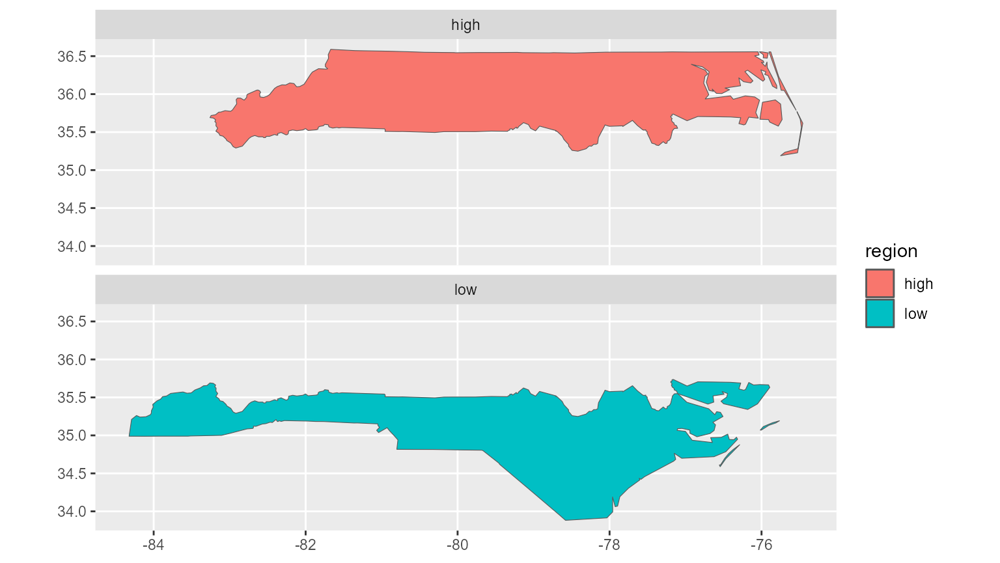

library(squarebrackets)
#> Run `?squarebrackets::squarebrackets_help` to open the introduction help page of 'squarebrackets'.
Introduction
The function documentation of the ‘squarebrackets’ package is rich with examples. This article adds additional examples focussed on combining ‘squarebrackets’ with other packages.
Aggregate sf-data.table
The ‘sf’ package adds data.frames/data.tables with spatial features. In this example, the functionality from ‘squarebrackets’ is used with an ‘sf’ class data.table. Here a plot is created (using ‘ggplot2’, ‘ggh4x’, and ‘tinycodet’) from an aggregation by region of the spatial data.table:
library(ggplot2)
library(ggh4x)
library(tinycodet)
#> Run `?tinycodet::tinycodet` to open the introduction help page of 'tinycodet'.
import_as(~dt., "data.table")
#> Importing packages and registering methods...
#> Done
#> You can now access the functions using `dt.$`
#> For conflicts report, packages order, and other attributes, run `attr.import(dt.)`
x <- sf::st_read(system.file("shape/nc.shp", package = "sf"))
#> Reading layer `nc' from data source `D:\Programs\R-4.4.0\library\sf\shape\nc.shp' using driver `ESRI Shapefile'
#> Simple feature collection with 100 features and 14 fields
#> Geometry type: MULTIPOLYGON
#> Dimension: XY
#> Bounding box: xmin: -84.32385 ymin: 33.88199 xmax: -75.45698 ymax: 36.58965
#> Geodetic CRS: NAD27
x <- dt.$as.data.table(x)
x$region <- ifelse(x$CNTY_ID <= 2000, 'high', 'low')
plotdat <- dt_aggregate(
x, SDcols = "geometry", f = sf::st_union, by = "region"
)
geometry <- ~geometry
fill <- ~region
fct <- ~region
ggplot(plotdat, aes_pro(geometry = geometry, fill = fill)) +
facet_wrap2(fct, nrow = 2) +
geom_sf()
Re-order an array like a Rubik’s cube
The the %row~% and %col~% operators from
‘tinycodet’ can quickly re-order elements of each row or column
independently of other rows or columns.
One can combine these operators with the sb_ methods
from ‘squarebrackets’ to re-order matrix slices of an array, like
re-ordering the panels on a Rubik’s cube. By using sb_set()
one can even do so by reference for better memory efficiency - which is
exactly what will be done here.
Let’s first create a mutable array:
x <- mutable_atomic(sample(1:27), dim = c(3,3,3))
print(x)
#> , , 1
#>
#> [,1] [,2] [,3]
#> [1,] 13 5 22
#> [2,] 23 6 4
#> [3,] 12 15 26
#>
#> , , 2
#>
#> [,1] [,2] [,3]
#> [1,] 9 21 2
#> [2,] 24 8 7
#> [3,] 17 27 16
#>
#> , , 3
#>
#> [,1] [,2] [,3]
#> [1,] 10 25 19
#> [2,] 20 14 1
#> [3,] 18 11 3
#>
#> mutable_atomic
#> typeof: integerNow let’s numerically sort every column in all slices in this array by reference:
library(tinycodet)
for(i in 1:3) {
y <- sb_x(x, n(i), 3) |> drop()
rp <- y %col~% y
sb_set(x, n(i), 3, rp = rp)
}Now, let’s see if this was successful:
print(x)
#> , , 1
#>
#> [,1] [,2] [,3]
#> [1,] 12 5 4
#> [2,] 13 6 22
#> [3,] 23 15 26
#>
#> , , 2
#>
#> [,1] [,2] [,3]
#> [1,] 9 8 2
#> [2,] 17 21 7
#> [3,] 24 27 16
#>
#> , , 3
#>
#> [,1] [,2] [,3]
#> [1,] 10 11 1
#> [2,] 18 14 3
#> [3,] 20 25 19
#>
#> mutable_atomic
#> typeof: integerYes, each column in each layer has independently been sorted numerically.
One can do the same thing with a character array; note that this time
we use stringi::stri_rank() for determining the proper
order:
x <- mutable_atomic(sample(c(letters, 1e3)), dim = c(3,3,3))
print(x)
#> , , 1
#>
#> [,1] [,2] [,3]
#> [1,] "v" "u" "j"
#> [2,] "k" "f" "b"
#> [3,] "g" "i" "q"
#>
#> , , 2
#>
#> [,1] [,2] [,3]
#> [1,] "a" "c" "1000"
#> [2,] "w" "n" "p"
#> [3,] "t" "r" "e"
#>
#> , , 3
#>
#> [,1] [,2] [,3]
#> [1,] "h" "o" "s"
#> [2,] "m" "y" "z"
#> [3,] "d" "x" "l"
#>
#> mutable_atomic
#> typeof: character
for(i in 1:3) {
y <- sb_x(x, n(i), 3) |> drop()
rp <- y %col~% stringi::stri_rank(y)
sb_set(x, n(i), 3, rp = rp)
}
print(x)
#> , , 1
#>
#> [,1] [,2] [,3]
#> [1,] "g" "f" "b"
#> [2,] "k" "i" "j"
#> [3,] "v" "u" "q"
#>
#> , , 2
#>
#> [,1] [,2] [,3]
#> [1,] "a" "c" "1000"
#> [2,] "t" "n" "e"
#> [3,] "w" "r" "p"
#>
#> , , 3
#>
#> [,1] [,2] [,3]
#> [1,] "d" "o" "l"
#> [2,] "h" "x" "s"
#> [3,] "m" "y" "z"
#>
#> mutable_atomic
#> typeof: characterAgain: successful.
Mutate column of data.table
We can mutate a column of a data.table by reference, by combining
‘squarebrackets’ with tinycodet::with_pro(), as
follows:
x <- sf::st_read(system.file("shape/nc.shp", package = "sf"))
#> Reading layer `nc' from data source `D:\Programs\R-4.4.0\library\sf\shape\nc.shp' using driver `ESRI Shapefile'
#> Simple feature collection with 100 features and 14 fields
#> Geometry type: MULTIPOLYGON
#> Dimension: XY
#> Bounding box: xmin: -84.32385 ymin: 33.88199 xmax: -75.45698 ymax: 36.58965
#> Geodetic CRS: NAD27
x <- dt.$as.data.table(x)
myform <- ~ PERIMETER / AREA
x$newcolumn <- 1:nrow(x)
mutated <- dt.$as.data.table(with_pro(x, myform))
sb2_set(x, col = "newcolumn", rp = mutated)
summary(x)
#> AREA PERIMETER CNTY_ CNTY_ID
#> Min. :0.0420 Min. :0.999 Min. :1825 Min. :1825
#> 1st Qu.:0.0910 1st Qu.:1.324 1st Qu.:1902 1st Qu.:1902
#> Median :0.1205 Median :1.609 Median :1982 Median :1982
#> Mean :0.1263 Mean :1.673 Mean :1986 Mean :1986
#> 3rd Qu.:0.1542 3rd Qu.:1.859 3rd Qu.:2067 3rd Qu.:2067
#> Max. :0.2410 Max. :3.640 Max. :2241 Max. :2241
#> NAME FIPS FIPSNO CRESS_ID
#> Length:100 Length:100 Min. :37001 Min. : 1.00
#> Class :character Class :character 1st Qu.:37051 1st Qu.: 25.75
#> Mode :character Mode :character Median :37100 Median : 50.50
#> Mean :37100 Mean : 50.50
#> 3rd Qu.:37150 3rd Qu.: 75.25
#> Max. :37199 Max. :100.00
#> BIR74 SID74 NWBIR74 BIR79
#> Min. : 248 Min. : 0.00 Min. : 1.0 Min. : 319
#> 1st Qu.: 1077 1st Qu.: 2.00 1st Qu.: 190.0 1st Qu.: 1336
#> Median : 2180 Median : 4.00 Median : 697.5 Median : 2636
#> Mean : 3300 Mean : 6.67 Mean :1050.8 Mean : 4224
#> 3rd Qu.: 3936 3rd Qu.: 8.25 3rd Qu.:1168.5 3rd Qu.: 4889
#> Max. :21588 Max. :44.00 Max. :8027.0 Max. :30757
#> SID79 NWBIR79 geometry newcolumn
#> Min. : 0.00 Min. : 3.0 MULTIPOLYGON :100 Min. : 8.35
#> 1st Qu.: 2.00 1st Qu.: 250.5 epsg:4267 : 0 1st Qu.:11.62
#> Median : 5.00 Median : 874.5 +proj=long...: 0 Median :13.32
#> Mean : 8.36 Mean : 1352.8 Mean :14.49
#> 3rd Qu.:10.25 3rd Qu.: 1406.8 3rd Qu.:16.11
#> Max. :57.00 Max. :11631.0 Max. :42.40